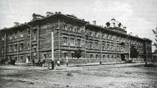

Над созданием устройств и систем скрытной передачи информации, имеющей государственное или военное назначение, ученые и инженеры трудятся давно. 
В период 1930-1939 работы по созданию засекречивающей связи начинаются и в нашей стране. Основоположником данных работ стал молодой инженер Владимир Александрович Котельников (будущий вице-президент Академии наук, лауреат Ленинской и Государственной премий, председатель Верховного Совета РСФСР, дважды Герой Социалистического Труда). Были организованы первые лаборатории по засекречиванию телеграфной и телефонной информации, в которых создавались лабораторные образцы, проверялись предложенные идеи, выпускались небольшие партии простейшей аппаратуры. Созданы первые небольшие производственные коллективы разработчиков техники засекречивания, послужившие базой, для формирования более мощных организаций.
Начавшаяся Великая Отечественная война резко повысила требования к качеству всех видов вооружения, в том числе и к аппаратуре засекречивания для обеспечения более оперативного управления боевыми операциями. Коллективы разработчиков были эвакуированы.
Их много раз реорганизовывали и передавали из ведомства в ведомство.
Примерно с начала 1943 г. в Москве активно работали лаборатории, организованные в НКВД, в которых ведущую роль занимали бывшие сотрудники лаборатории В.А.Котельникова. Разрабатывалось несколько типов аппаратов секретной телефонии.
В послевоенный период в СССР стали уделять повышенное внимание реорганизации шифровальной и дешифровальной службы, по выведению ее на более высокий научно-технический уровень.
21 января 1948 года Постановлением Совета Министров СССР в МГБ подмосковном Марфине была образована лаборатория № 8 («Марфинская лаборатория») с целью проведения важнейших исследований по разработке и построению техники для засекреченной связи, для разработки аппаратуры засекречивания телефонных переговоров.
Постановлением предполагалось, что к работе в лаборатории наряду с опытными специалистами отдела правительственной связи и отдела оперативной техники МГБ будут использованы и заключенные. Некоторые стороны того периода жизни предприятия изложены в произведениях А.И.Солженицына (с точки зрения заключенного, выразившего свое отношение к организации, которую он назвал «Шарашкой», в произведении «В круге первом»), Л.З.Копелева (в книге «Утоли мои печали») и К.Ф.Калачева (с научной и производственной позиции, рассказавшем о деятельности лаборатории в книге «В круге третьем»).
К концу 1948 года в Марфинской лаборатории работали 490 человек и в том числе 280 заключенных. Вместе с тем в ее составе явно недоставало специалистов — криптографов, без которых трудно было решать вопросы разрабатываемой аппаратуры. Работа Марфинской лаборатории была успешной. В итоге ее сверхнапряженной работы была решена сложнейшая научно-техническая проблема создания стойкой аппаратуры для засекречивания телефонных переговоров на линиях ВЧ-связи, опытные образцы которой были приняты высокой правительственной комиссией.
Переломным моментом в реорганизации всей криптографической службы страны явилось решение политбюро ЦК ВКП (б) от 19 октября 1949 г. о коренной перестройке работы Специальной службы МГБ СССР и создании Главного управления Специальной службы (ГУСС) при ЦК ВКП (б), в ведение которого было передано и 6 Управление МГБ. Тем самым существенно повышался «статус» криптографической службы и создавались более благоприятные условия для ее дальнейшего развития.
Марфинская лаборатория или «шарашка» была реорганизована.
Еще на подготовительном этапе этой реорганизации было принято постановление Совета Министров СССР об организации закрытого отделения механико-математического факультета МГУ по подготовке специалистов по математике и физике для ГУСС. Указанным решением ЦК было предусмотрено также создание в рамках ГУСС двух научно-исследовательских институтов.
В начале 1950 года создается НИИ-1, в составе которого предусматривался ученый совет, аспирантура и специальная научно-техническая библиотека. Работа по подготовке реорганизации Марфинской лаборатории завершилась выходом Постановления Совмина СССР от 12.01.52 г. «О разработке аппаратуры для засекречивания телефонных переговоров». В соответствии с этим постановлением в ГУСС при ЦК ВКП (б) на базе передаваемых из ООТ МГБ СССР Марфинской лаборатории и отделения точной механики, а также 3-й и 5-й лабораторий ГУСС создается институт, получивший название НИИ-2 (ныне ХК АО «Концерн «Автоматика»).
В 1953 году, после смерти И.В.Сталина, произошла очередная реорганизация: основные подразделения ГУСС были переданы обратно в органы МГБ СССР, а НИИ-2 — в промышленное министерство, сначала в Министерство электропромышленности и электростанций, а затем в Министерство промышленности средств связи.
В конце 50-х НИИ-2 все в большей степени загружали задачами не только разработки аппаратуры, но и участия в проектировании систем засекреченной связи.
Одной из важных составляющих истории развития отрасли является история НИИ-3, впоследствии ПНИЭИ.
К 1957 году в СССР работали научно-исследовательские и проектные организации (НИИ-2 г. Москва, ОКБ при заводе САМ г. Пенза, ОКБ при Калужском электромеханическом заводе и др.), которые занимались разработкой и промышленным выпуском аппаратуры криптографической защиты телефонных переговоров и телеграфной информации.
Эти организации в основном обеспечивали структуры государства техникой защиты информации.
Но потребности заказчиков — Министерства Обороны, КГБ и других ведомств росли, а возможности промышленности удовлетворить эти запросы отставали. Стала очевидной необходимость создания в стране дополнительных организаций, которые должны специализироваться на разработках и изготовлении подобной техники специального назначения.
Вопрос обсуждался в высших партийных и правительственных органах. Пензенское партийное руководство вышло в ЦК КПСС и Совет Министров СССР с предложением об организации именно в Пензе НИИ — 3 и еще двух институтов радиотехнической отрасли.
На государственном уровне было принято решение о создании новых научных и промышленных предприятий.
Приказом Госкомитета по радиоэлектронике при СМ СССР от 18 января 1958 г. № 34 для указанных целей был образован НИИ-3,впоследствии получивший наименование Пензенский научно-исследовательский электротехнический институт.
При формировании коллектива научно-технических специалистов были приглашены из НИИА в 1958 на должность главного инженера М.Г. Демков и на должности руководителей подразделений еще 8 специалистов со стажем работы 6-8 лет.
С отменой абонентских номеров институту присвоили наименование Пензенский научно-исследовательский электротехнический институт. В 1999 году институт становится унитарным предприятием, а в 2015 году акционерным обществом «ПНИЭИ». АО «ПНИЭИ» входит в состав ХК АО «Концерн» Автоматика» и находится в ведении Государственной корпорации «Ростех».
Институт внес огромный вклад в развитие отрасли промышленности средств связи, прочно вошел в когорту лучших предприятий страны по созданию средств шифровальной техники для обеспечения защиты конфиденциальной информации, в том числе государственной тайны, в телекоммуникационных системах.
В коллективе выросла плеяда замечательных исследователей и специалистов, сложились научно-исследовательские коллективы, способные решать самые сложные задачи по направлениям исследований и разработок шифровальных средств для самых различных ведомств.
Значительный вклад в разработки института внесли доктор технических наук, академик, генерал армии А.В.Старовойтов, главные конструкторы и ведущие специалисты АО «ПНИЭИ» М.Г. Демков, А. Г. Зимин, Г. П. Минькин, С. В. Русинов, Г. Б. Селезнев, О. П. Cтепченков, Н. Ф. Юрков, В.А. Фунтиков, Г.М. Овчинкин, Ю.Я. Сидоркин, О.В. Ефимов, В.А. Оськин, В.С. Федянин, Ю.В. Сулимов, А.В. Лысиков, В.В. Колядо и др.
Проведено более 300 научно-исследовательских и более 150 опытно-конструкторских работ, внедрено в производство более 100 типов аппаратуры и устройств средств связи, обеспечивающих криптографическую защиту и автоматическую коммутацию всех видов информации.
Ученые и специалисты института существенно подняли уровень криптографии, создали широкий класс (более 70 видов) специальной техники криптографической защиты, определивших высокий уровень безопасности отечественных защищенных специализированных систем связи и управления для нужд силовых ведомств, специальных служб и структур управления государством.
Шесть разработок предприятия отмечены Государственными премиями СССР и премией Правительства РФ в области науки и техники.
Пятнадцать сотрудников института стали Лауреатами Государственной Премии в области науки и техники.
Сотни сотрудников награждены орденами и медалями, многие неоднократно поощрялись руководством отрасли и региона. Создано и запатентовано более 650 изобретений.